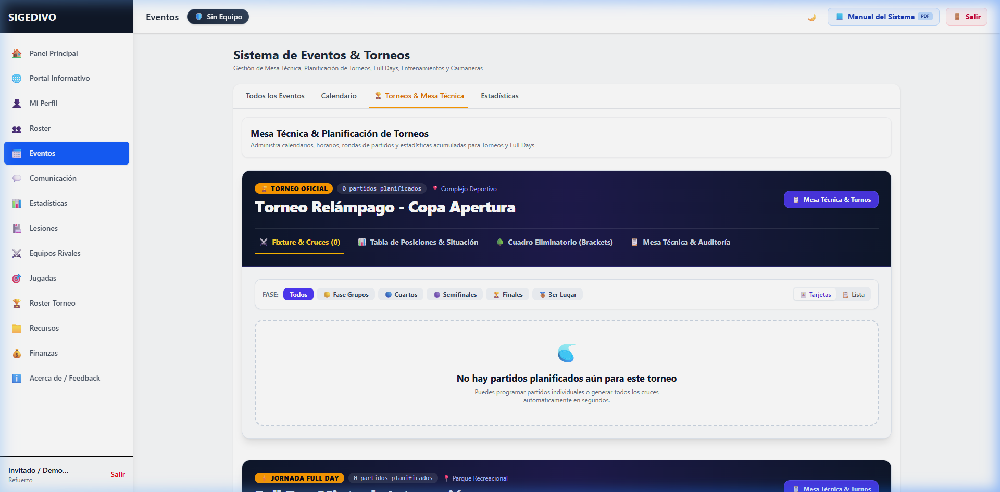
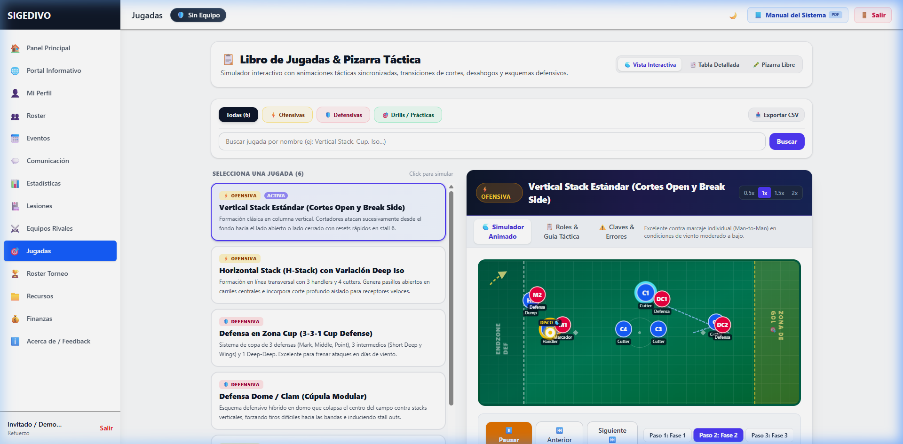
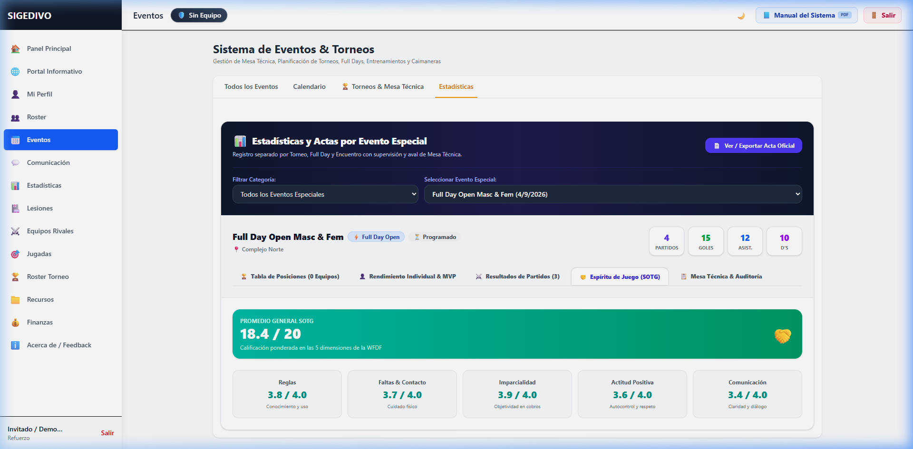
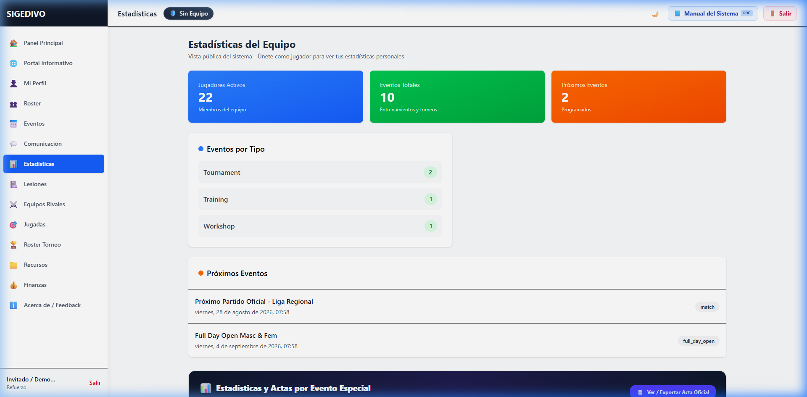

SIGEDIVO
Plataforma Deportiva Integral de Gestión, Mesa Técnica, Estadísticas en Tiempo Real y Táctica para el Ultimate Frisbee.
Creador & Desarrollador
Frank Sousa (@frankSousa23)
Comunidad Oficial
San Juan Ultimate Crew — Guárico, VE
El Desafío y Nuestra Misión
Falta de Automatización
Las estadísticas en campo, marcadores y actas oficiales se llevaban manualmente en papel o planillas propensas a errores y pérdidas de datos.
SIGEDIVO Digital
Una plataforma web ultra-rápida y táctil para tablets y móviles en cancha que registra goles, asistencias, defensas y SOTG al instante.
Federaciones y Clubes
Diseñado para respaldar formalmente a la FDVV, a la AADV y sentar las bases organizativas de la AGDV con código libre (MIT).
Stack Tecnológico de Alto Rendimiento
React 18 + Vite 6
SPA reactiva y diseño táctil responsivo optimizado para móviles.
Node.js + Express
Backend modular con validación Zod, JWT y auditoría en tiempo real.
PostgreSQL 16
Persistencia transaccional robusta gestionada con Prisma ORM 7.
RBAC & Multi-Equipo
Aislamiento por equipo con dorsales independientes (1-99).
Pizarra Táctica y Anotaciones en Vivo
Registro Instantáneo de Goles y Asistencias
Selección táctil con asignación de asistente, Callahan o error rival en 1 solo toque.
Defensas (D's) y Pérdidas (Turnovers)
Alimenta en vivo las métricas de posesión y eficiencia individual (+/- Plus/Minus).
Fusión de Invitados (Merge Guest)
Anota estadísticas a refuerzos en caimaneras y fusiónalas atómicamente al registrar su cuenta.

📸 Captura real del módulo de Mesa Técnica y Convocatoria de Partidos en Producción
Libro de Jugadas & Pizarra Interactiva
📐 Simulaciones Animadas
Paso a paso interactivo de jugadas (Vertical Stack, Horizontal Stack y Cup 3-3-1).
⏱️ Velocidades Configurables
Reproducción a 0.5x, 1x, 1.5x o 2x con notas tácticas y roles de cada atleta.
🎨 Pizarra Libre en Vivo
Dibuja rutas de pase, ubica atacantes, defensores y discos con borrado y exportación.

📸 Simulador táctico interactivo con análisis de formaciones ofensivas y defensivas
Torneos, Convocatorias y SOTG
Grupos, Cuartos, Semis y Final con posiciones automáticas.
Evaluación oficial WFDF por partido.
Líneas O-Line, D-Line, Flex y asistencia RSVP.
Generación y firma digital certificada.

📸 Evaluación de Espíritu de Juego (SOTG) y tabla de posiciones de torneo
Roster, Salud Médica y Estadísticas
🏃 Roster de Atletas
Dorsales independientes (1-99), posiciones Handler/Cutter/Híbrido y métricas.
🏥 Historial Médico
Diagnóstico de lesiones (Leve, Moderada, Severa) y evolución hasta el alta médica.
📈 Tablas de Líderes
Goles, asistencias, bloqueos (D) y diferencial (+/-) en tiempo real.

📸 Panel de analítica de líderes de equipo y estadísticas de rendimiento individual
¡Pruébalo en Vivo Ahora Mismo!
El sistema está 100% disponible con un entorno de demostración precargado que incluye partidos, atletas y estadísticas reales.
Enlace Oficial de Acceso
https://san-juan-ultimate-crew.seenode.app/👉 Haz clic en "Probar Modo Invitado" para explorar sin registro.
Roadmap de Evolución Futura
Consolidación Beta
Despliegue público, modo invitado, exportación de actas oficiales en PDF y pruebas en torneos locales.
Marcadores en Vivo (WebSockets)
Transmisión en directo del marcador y jugadas punto a punto para espectadores vía streaming.
Red Federada Nacional
Ranking nacional por clubes, ligas inter-estados y validación de licencias de atletas.
¡Muchas Gracias!
"Unidos por el deporte más bonito del mundo: el Ultimate Frisbee."
Sesión abierta para Preguntas y Demostración en Vivo